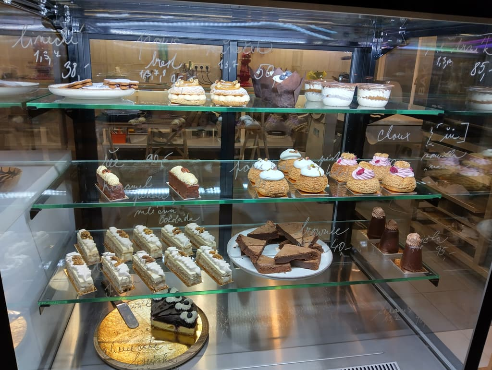
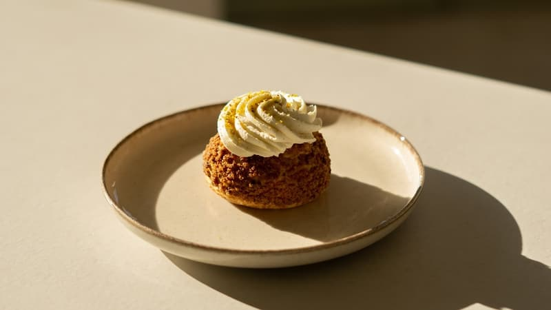
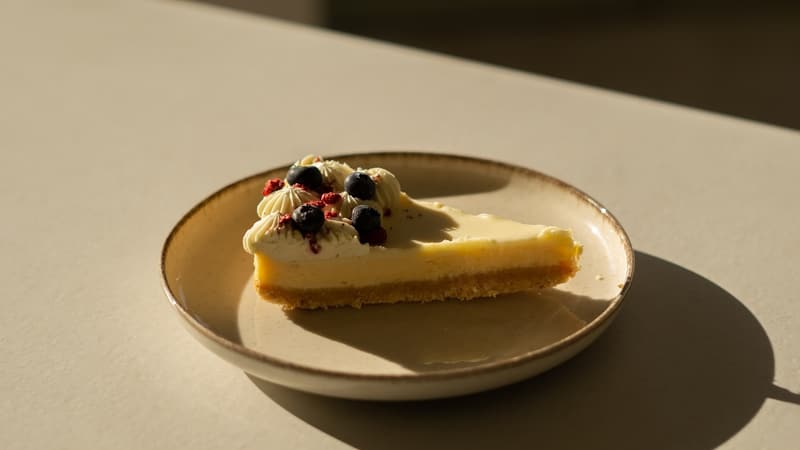
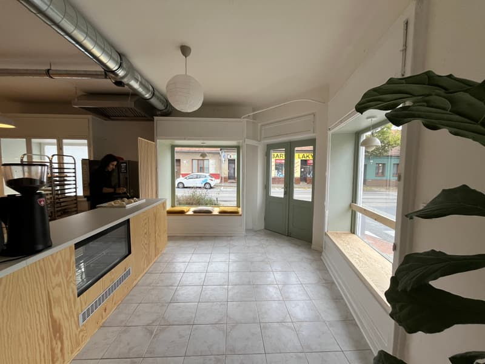
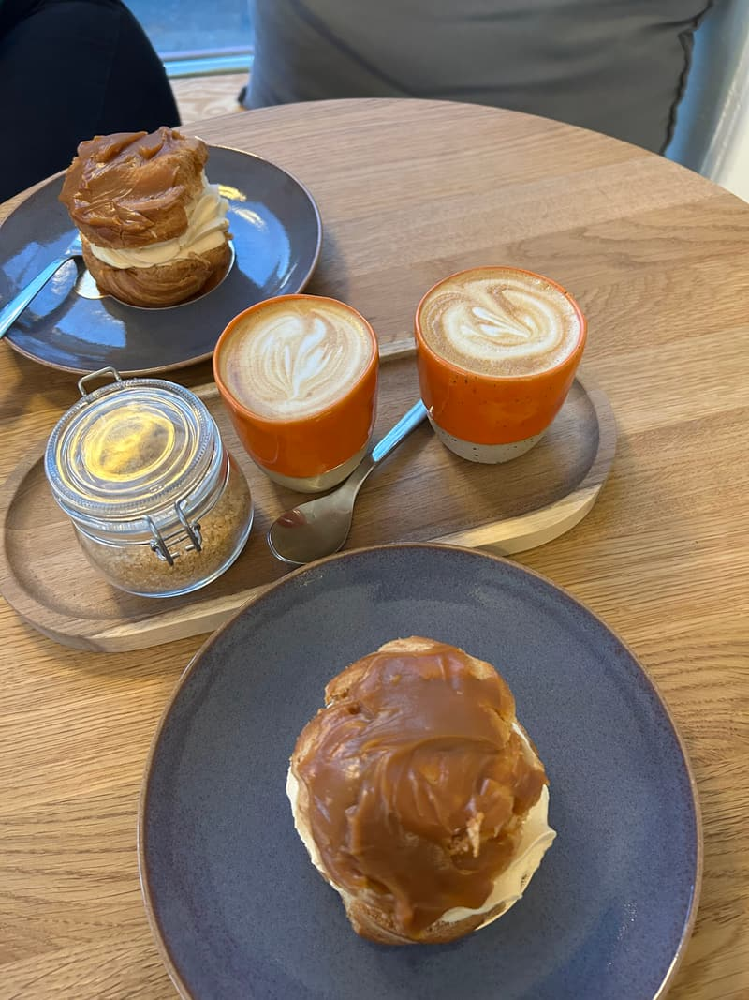
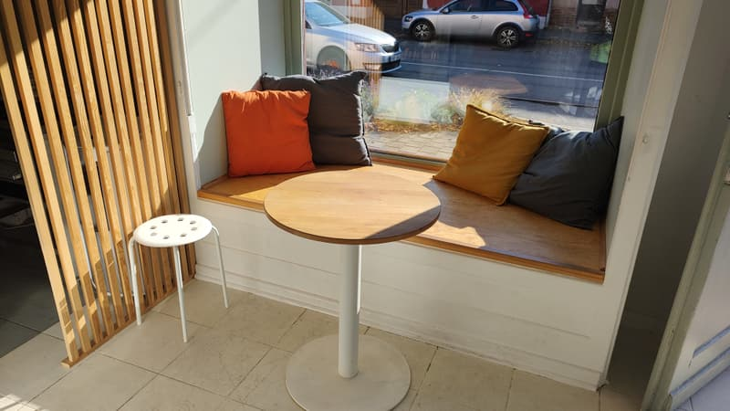
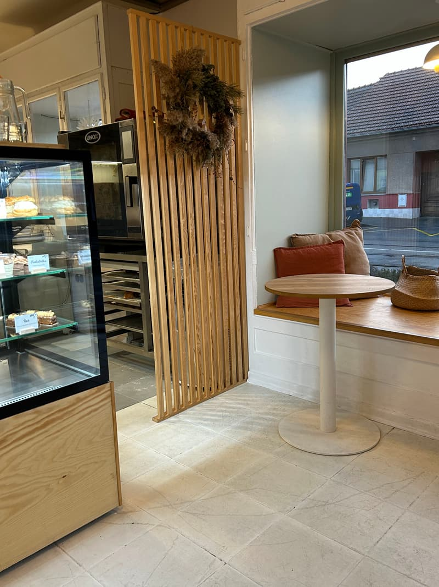
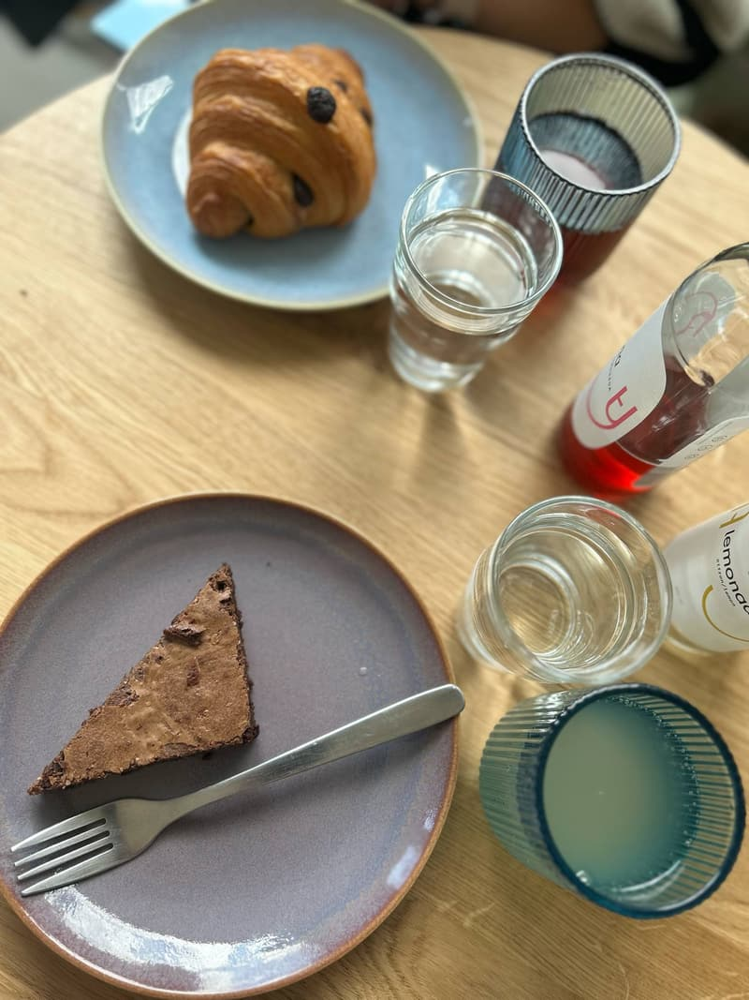

Brno-Židenice, Táborská 102
Den v Putře.
Malá cukrárna a kavárna, kde se peče z pravého másla. Projděte si s námi jeden obyčejný den — od prvního plechu po poslední choux. U každé hodiny můžete listovat do strany.


výrobna
Nejdřív máslo. Vždycky.
Putra je staročesky čerstvé máslo. Croissanty a pusinky jdou do trouby, dorty na objednávku dostávají první vrstvu krému.
Víc ze 7:00Z výrobny

Vrstvy listového těsta 
Lesní ovoce na krémový dort 
Čokoládový choux, první ve slunci 
Výrobna za pultem

vitrína
Vitrína se plní.
Větrníky s karamelem, choux, řezy, tartaletky. Každý týden trochu jinak — podle toho, co voní na Zelňáku.
Víc z 9:30Co bývá ve vitríně

Větrník s karamelem 
Choux s malinovým krémem 
Choux s vanilkou 
Cheesecake s borůvkami 
Brownie se sušenými malinami 
Makronky 
Police s choux a řezy 
Cedulky psané rukou

Táborská 102
Otevíráme.
Úterý a pátek do 16:00, středa a čtvrtek do 18:00.
Víc z 10:00Ve dveřích a uvnitř

Zástěra, věnec a cedulka na dveřích 
Ranní směna u zelených dveří 
Pult a pohled do ulice 
Papírová lampa nad vitrínou 
Kytice na pultu


u okna
První flat white u okna.
Káva z brněnské pražírny, voda z kohoutku zdarma. Nikdo nespěchá.
Víc z 11:20Ke kávě

Čokoládový zákusek a oranžový hrnek 
Hrnek s vyraženým logem 
Dvě kávy a dva dezerty 
Čokoládový řez s pekanem 
Něco studeného


polední pauza
Pavlova místo oběda.
Pečená pusinka, krém a ovoce ze Zelňáku. Borůvky dnes, zítra třeba fíky.
Víc z 12:30Sladké u okna
Z reelsu @putrabrno 
Mini pavlova s lesním ovocem 
Větrník před výlohou 
Choux s ostružinovým krémem

parapet
Slunce se opře do parapetu.
Nejlepší místo v Putře. Kdo tu sedí, ví.
Víc z 13:30Místa u okna a něco studeného

Lavice s polštáři 
Stolky u výlohy do Táborské 
Koutek za lamelami 
Matcha limonády 
Limonády na stole


na oslavu
Někdo si odnáší dort na oslavu.
Zákusky s sebou balíme do krabic, dorty na objednávku vydáváme po domluvě.
Víc ze 14:45Dorty a krabice s sebou

Malé dortíky s nápisem 
Čokoládový dort na dílky 
Dort zdobený čokoládou


poslední kus
Poslední choux.
V pátek pečeme do vyprodání. Kdo dřív přijde…
Víc z 15:50Co zbylo na stolech

Croissant a růžový choux 
Pain au chocolat a brownie 
Malinový, nakousnutý

Táborská
Vyprodáno. Zítra znovu.
Židle ve slunci, prázdná vitrína. Ve středu a ve čtvrtek máme otevřeno do 18:00.


zadní místnost
Mezitím vzadu: vánoční cukroví.
Linecké hvězdičky, včelí úlky, vanilkové rohlíčky. Krabice se plní až do prosince.
Zamluvit krabici
Dort na objednávku
Od 1 290 Kč, nejméně 3 dny předem. Ozveme se do 24 hodin.
Vánoční cukroví 2026
Linecké, vanilkové rohlíčky, pracny, kokosky. 0,5 kg za 690 Kč, 1 kg za 1 290 Kč. Objednávky do 10. 12., výdej 18.–22. 12.
Zamluvit krabiciVe vitríně
Větrník 89 Kč · pistáciový řez 95 Kč · mini pavlova 99 Kč · choux 85 Kč · skořicový šnek 65 Kč · flat white 79 Kč